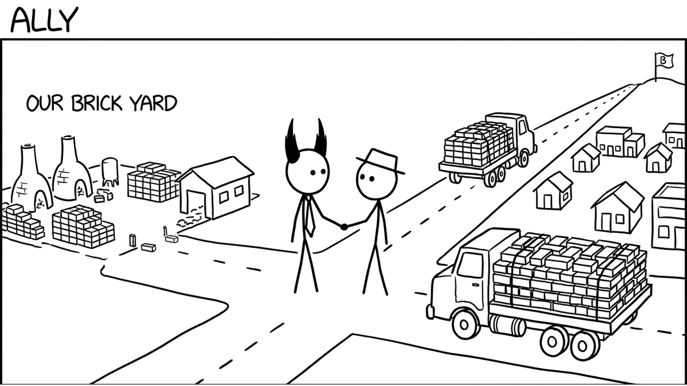

<section id="cap-ally" data-transition="fade" style="display:flex; align-items:center; justify-content:center; padding:0; background:#fcfcfa">

<p style="position:absolute;left:0;bottom:10px;width:1920px;margin:0;text-align:center;font-family:'Patrick Hand', 'Trebuchet MS', sans-serif;font-size:22px;color:#8a8f98">Copyright Dobromir Montauk 2026</p>
<aside><b>Ally.</b> Other people's capacity can become yours.<br>- The platform team that adds the one API you need, if they know about it a quarter ahead.<br>- The head of Product as a partner, not a requester: you plan the roadmap together.<br>- HR and your recruiter, who can move faster on your hires if they trust you.<br>- Your boss: make their job easier, and they'll spend their capital on your team.<br>- Vendors and open source: don't build what you can buy.<br>Alliances are built before you need them, not during the crisis.</aside>
</section>
